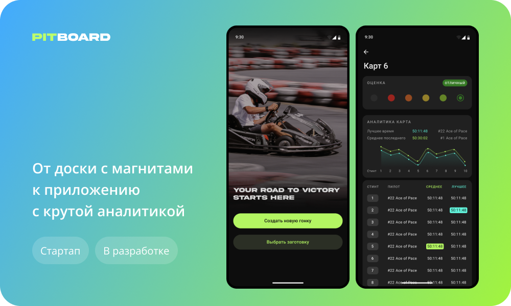

Pitboard — приложение для менеджеров гоночных команд

Контекст
В гоночных соревнованиях команда состоит не только из участников заезда, но и из людей, координирующих их — менеджеров.
Задача менеджеров отслеживать время стинта (один заезд одного человека, как правило, длится от 10 до 20-30 минут) и, когда оно подходит к концу, сообщать, что пора меняться со следующим сокомандником.
Без хорошего менеджера практически невозможно выиграть гонку в современном прокатном картинге.
Погружение в проблему
Результат участника зависит не только от его мастерства, но и от состояния карта.
Менеджер на протяжении всей гонки оценивает какие карты едут быстро, а какие медленно. Своей команде во время смены участника он говорит брать лучшие из них.
Раньше для этого использовалась доска с магнитами, перестановка магнитов занимала много времени, а уследить за 30+ картами было сложно. Поэтому было решено сделать оптимизированное приложение с автоматическим выводом аналитики во время заезда. Это упростит задачу менеджера, устранит путаницу и позволит достичь команде новых высот.
Начало работы
Заказчик — менеджер гоночной команды. Вместе с ним и командой разработчиков мы провели несколько созвонов, где глубоко погрузились в пользователький опыт, постарались раскопать все подводные камни и сформулировать основные требования.
Было принято решение создавать MVP, чтобы выпустить в тесты продукт, который решал бы главные текущие проблемы, а затем итерационно его дорабатывать и сделать лучшим уникальным предложением на рынке.
Заказчик сделал зарисовки будущего интерфейса.
Бенчмаркинг
Я проанализировала существующие решения:
Первая версия
Изначально решили ориентироваться на Go Kart Team Manager. Взять аналогичное отображение картов в виде таблицы, но сделать интерфейс более приятным, перемещение картов с трека в питлейн удобнее, добавить в функционал аналитику.
Но заказчик запросил расширение. Команда разработчиков утвердила, что программно возможно подтягивать все данные о гонке: время заезда каждого участника, кол-во кругов, место на треке и тд.
На этом этапе было принято решение сделать полноценную замену RaceMann, с уникальной возможностью связать ее с любым картинг-центром и полноценной аналитикой во время и после заезда.
Прототип
Чтобы заказчик и команда разработчиков могли «пощупать» приложение и внести правки, я собрала прототип. На созвоне все вместе прошлись по главному сценарию и обсудили, что следует переработать.